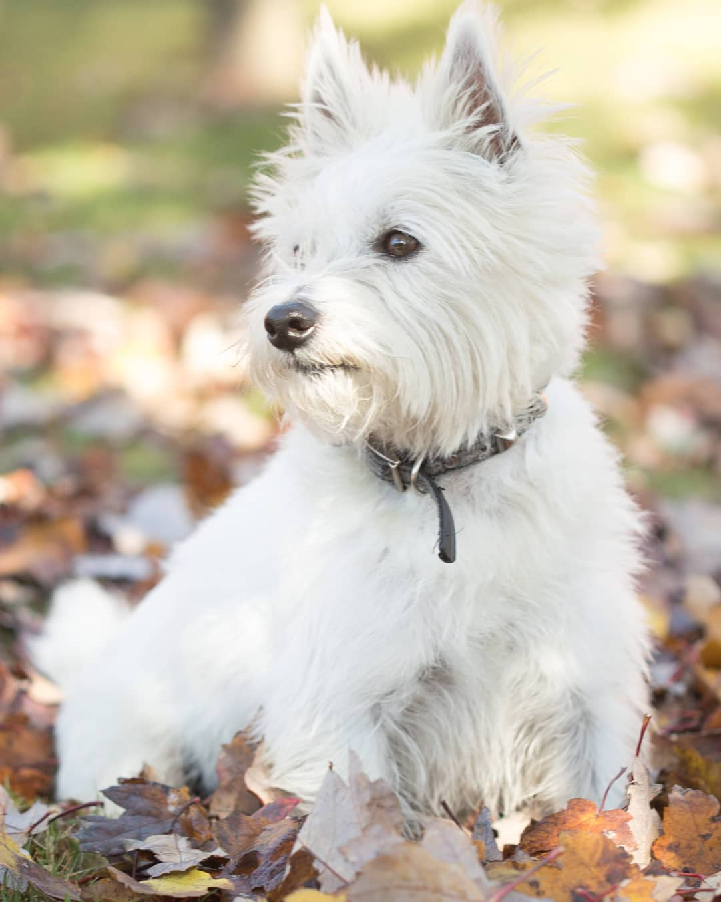
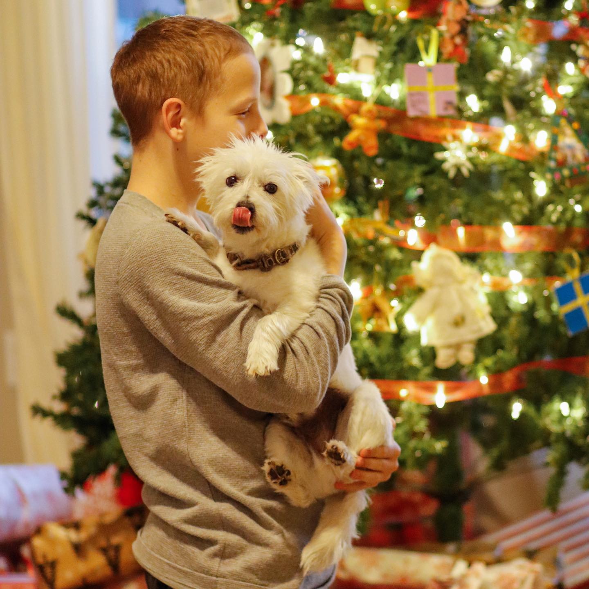

Charlie: The West Highland Terrier
Snow Adventures: Charlie absolutely loves the snow. He bounces through the fluffy white drifts, leaving tiny pawprints behind as he chases after snowflakes and enjoys the crisp winter air.

Dog Park in the Fall: Fall is Charlie's favorite time to visit the dog park. With leaves crunching beneath his paws, he runs through the vibrant orange and yellow foliage, making friends with every dog he meets.

Family Love Year-Round: Charlie cherishes being surrounded by his family, especially during Christmas when the house is filled with warmth and joy. Whether it’s snuggling by the fire or getting belly rubs, he basks in love all year long.